Глава 10 Тематические карты
Предварительные условия
Для выполнения кода данной лекции вам понадобятся следующие пакеты:
10.1 Введение
Тематические карты представляют собой важный инструмент географических исследований. Таблицы и графики не дают полного представления о пространственном распределении изучаемого явления. Это знание способна дать исследователю карта.
Разнообразие типов и видов карт достаточно велико. Комплексные картографические произведения, содержащие многослойный набор объектов, создаются, как правило, средствами геоинформационных пакетов. Такие карты требуют тщательной и кропотливой работы с легендой, устранения графических конфликтов между знаками, многократного редактирования входных данных, условий, фильтров и способов изображения в попытке достичь эстетичного и вместе с тем информативного результата.
В то же время, гораздо большее количество создаваемых в повседневной практике карт носят простой аналитический характер. Такие карты показывают одно, максимум два явления, и могут иллюстрировать входные данные, результаты промежуточных или итоговых расчетов. Создание именно таких карт целесообразно автоматизировать средствами программирования. В этом разделе мы познакомимся с созданием тематических карт средствами пакета tmap. В качестве источника открытых данных мы будем использовать Natural Earth и WorldClim.
10.1.1 Данные Natural Earth
Natural Earth — это открытые мелкомасштабные картографические данные высокого качества. Данные доступны для трех масштабов: 1:10М, 1:50М и 1:110М. Для доступа к этим данным из среды R без загрузки исходных файлов можно использовать пакет rnaturalearth. Пакет позволяет выгружать данные из внешнего репозитория, а также содержит три предзакачанных слоя:
ne_countries()границы странne_states()границы единиц АТД 1 порядкаne_coastline()береговая линия
Для загрузки других слоев необходимо использовать функцию ne_download(), передав ей масштаб, название слоя и его категорию:
countries = ne_countries() %>% st_as_sf()
coast = ne_coastline() %>% st_as_sf()
ocean = ne_download(scale = 110,
type = 'ocean',
category = 'physical') %>%
st_as_sf()
## OGR data source with driver: ESRI Shapefile
## Source: "/private/var/folders/5s/rkxr4m8j24569d_p6nj9ld200000gn/T/Rtmpogv0WH", layer: "ne_110m_ocean"
## with 2 features
## It has 3 fields
cities = ne_download(scale = 110,
type = 'populated_places',
category = 'cultural') %>%
st_as_sf()
## OGR data source with driver: ESRI Shapefile
## Source: "/private/var/folders/5s/rkxr4m8j24569d_p6nj9ld200000gn/T/Rtmpogv0WH", layer: "ne_110m_populated_places"
## with 243 features
## It has 119 fields
## Integer64 fields read as strings: wof_id ne_id
rivers = ne_download(scale = 110,
type = 'rivers_lake_centerlines',
category = 'physical') %>%
st_as_sf()
## OGR data source with driver: ESRI Shapefile
## Source: "/private/var/folders/5s/rkxr4m8j24569d_p6nj9ld200000gn/T/Rtmpogv0WH", layer: "ne_110m_rivers_lake_centerlines"
## with 13 features
## It has 31 fields
## Integer64 fields read as strings: scalerank ne_idПознакомимся с загруженными данными:
plot(ocean %>% st_geometry(), col = 'lightblue')
plot(countries, col = 'white', border = 'grey', add = TRUE)
plot(coast, add = TRUE, col = 'steelblue')
plot(rivers, add = TRUE, col = 'steelblue')
plot(cities, add = TRUE, col = 'black', pch = 19, cex = 0.2)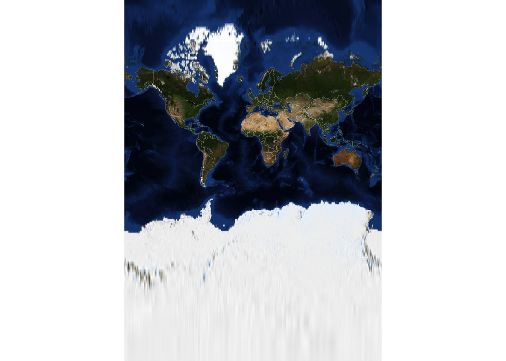
Перед построением карт мира данные целесообразно спроецировать. Чтобы не трансформировать каждый слой отдельно, можно объединить слои в список и воспользоваться функционалом lapply для множественного трансформирования. Для создания списка воспользуемся функцией lst() из пакета tibble, которая присваивает компонентам списка имена, соответствующие названиям входных переменных (чтобы не писать ocean = ocean):
lyr = tibble::lst(ocean, coast, countries, rivers, cities)
lyrp = lapply(lyr, st_transform, crs = "+proj=eck3") # Псевдоцилиндрическая проекция Эккерта
plot(lyrp$countries %>% st_geometry(), col = 'white', border = 'grey', lwd = 0.5)
plot(lyrp$ocean , col = 'lightblue', lwd = 0.5, border = 'steelblue', add = TRUE)
plot(lyrp$rivers, add = TRUE, lwd = 0.5, col = 'steelblue')
plot(lyrp$cities, add = TRUE, col = 'black', pch = 19, cex = 0.1)
10.1.2 Данные WorldClim
WorldClim — это открытые сеточные наборы климатических характеристик с пространственным разрешением от \(30''\) (около 1 км) до \(10'\) (около 20 км). Данные можно выгрузить в виде файлов GeoTiff, однако эту операцию можно сделать и программным путем через пакет raster — используя функцию getData().
Выполним загрузку 10-минутного растра с суммарным количеством осадков за год:
prec = raster::getData("worldclim", var = "prec", res = 10)
plot(prec, nc = 2) # это 12-канальный растр
Использовать программную загрузку целесообразно для небольших наборов данных. Если счет пошел на десятки мегабайт и выше, следует все-таки выкачать данные в виде файла и работать с ним.
Выполним трансформирование данных в проекцию Миллера. Для того чтобы карта не обрезалась по охвату растра (он не включает данные на Антарктиду), необходимо расширить его охват на весь земной шар. Для этого используем функцию extend() из пакета raster:
precm = prec %>%
extend(extent(-180, 180, -90, 90)) %>%
projectRaster(crs = "+proj=mill")
lyrm = lapply(lyr, st_transform, crs = "+proj=mill") # Цилиндрическая проекция МиллераВизуализируем полученные данные на карте:
ramp = colorRampPalette(c("white", "violetred"))
# Визуализируем данные на январь:
plot(precm, 1,
col = ramp(10),
colNA = 'grey',
main = 'Количество осадков в январе, мм',
box = FALSE,
axes = FALSE)
plot(lyrm$ocean, border = 'steelblue',
col = 'lightblue', add = TRUE)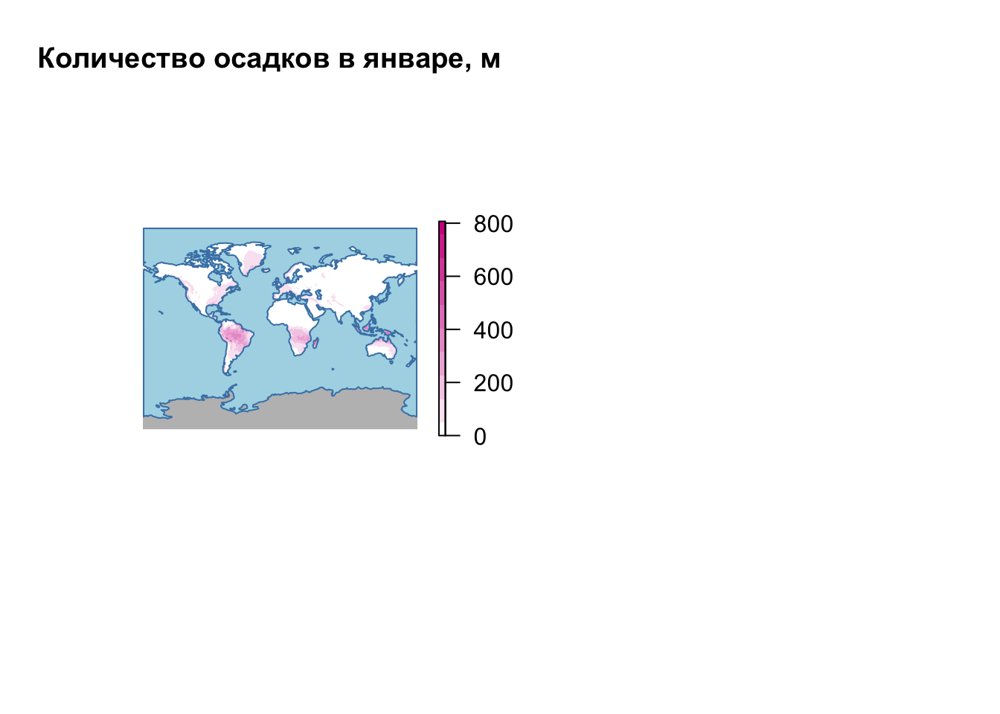
10.2 Способы изображения
В этом разделе изложение сосредоточено на параметрах способов изображения. Приведение легенд и компоновки карты в аккуратный вид рассматривается далее в разделе Компоновка.
Пакет tmap предоставляет простой в использовании и достаточно мощный механизм формирования тематических карт. Шаблон построения карты в этом пакете напоминает ggplot и выглядит следующим образом:
где:
DATA- объект пространственного типа (sf,sp,starsилиraster)METHOD- метод визуализации этого объекта (способ изображения)PARAMETERS- параметры метода
10.2.1 Векторные данные
Для реализации качественного и количественного фона, а также картограмм используется метод tm_polygons(). Он автоматически определяет тип переменной и строит соответствующую шкалу:
tm_shape(lyrp$countries) +
tm_polygons('economy') + # качественная переменная
tm_shape(lyrp$ocean)+
tm_fill(col = 'azure') +
tm_borders(col = 'steelblue')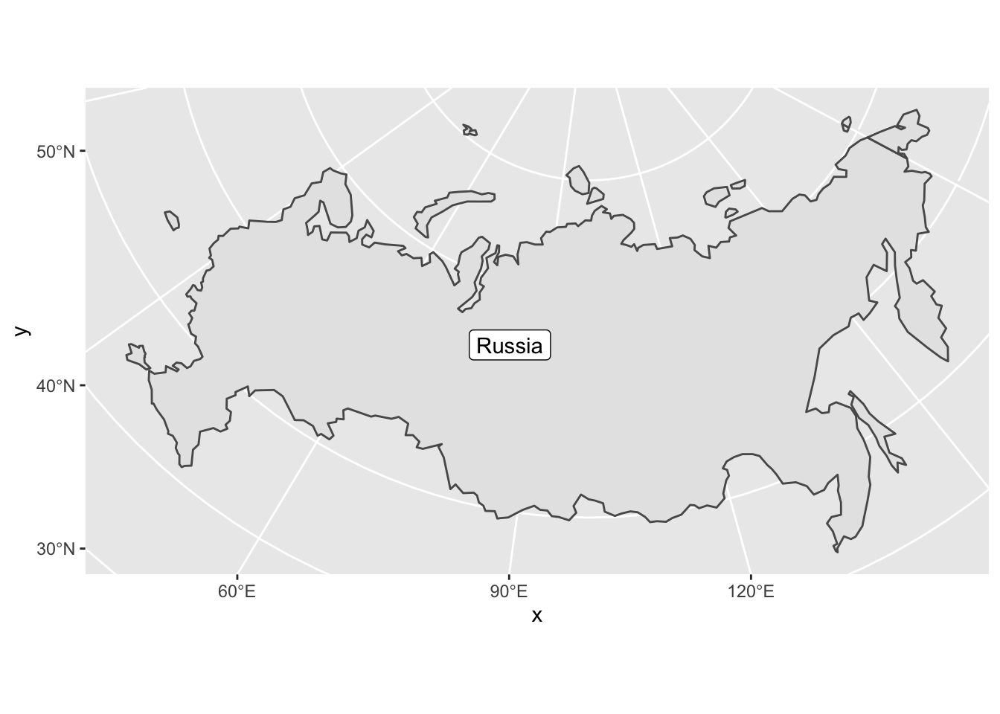
Количественный фон или картограммы получаются при картографировании числового показателя применением той же функции tm_polygons():
('1H3nzTwbn8z4lJ5gJ_WfDgCeGEXK3PVGcNjQ_U5og8eo' %>% # продолжительность жизни
gs_key(lookup = FALSE) %>% # не используем авторизацию
gs_read(ws = 1) %>%
rename(name = 1) %>%
gather(year, lifexp, -name) %>%
filter(year == 2016) %>%
left_join(read_excel('data/gapminder.xlsx', 2)) %>%
mutate(geo = stringr::str_to_upper(geo)) -> lifedf) # выгружаем данные по продолжительности и сохраняем в переменную lifedf
## # A tibble: 260 x 13
## name year lifexp geo four_regions eight_regions six_regions
## <chr> <chr> <dbl> <chr> <chr> <chr> <chr>
## 1 Abkh… 2016 NA <NA> <NA> <NA> <NA>
## 2 Afgh… 2016 52.7 AFG asia asia_west south_asia
## 3 Akro… 2016 NA <NA> <NA> <NA> <NA>
## 4 Alba… 2016 78.1 ALB europe europe_east europe_cen…
## 5 Alge… 2016 76.5 DZA africa africa_north middle_eas…
## 6 Amer… 2016 73 <NA> <NA> <NA> <NA>
## 7 Ando… 2016 84.8 AND europe europe_west europe_cen…
## 8 Ango… 2016 60 AGO africa africa_sub_s… sub_sahara…
## 9 Angu… 2016 NA <NA> <NA> <NA> <NA>
## 10 Anti… 2016 76.5 ATG americas america_north america
## # … with 250 more rows, and 6 more variables: members_oecd_g77 <chr>,
## # Latitude <dbl>, Longitude <dbl>, `UN member since` <dttm>, `World bank
## # region` <chr>, `World bank income group 2017` <chr>
coun = lyrp$countries %>% left_join(lifedf, by = c('adm0_a3' = 'geo'))
tm_shape(coun) +
tm_polygons('lifexp', border.col = 'gray20') + # количественная переменная
tm_shape(lyrp$ocean) +
tm_fill(col = 'azure') +
tm_borders(col = 'steelblue4')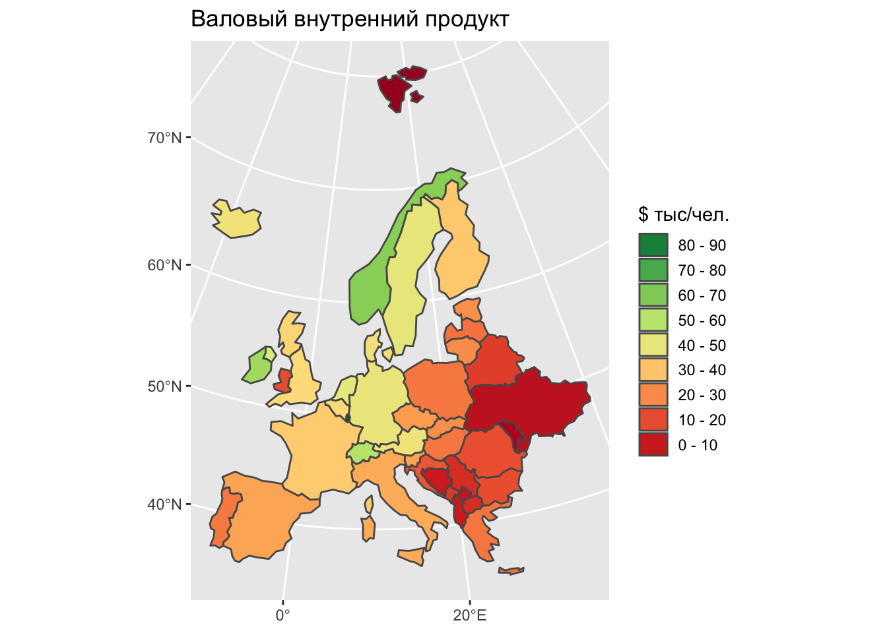
Для реализации способа картодиаграмм используется геометрия tm_bubbles(). Чтобы оставить отображение границ полигонов, нам необходимо к одной геометрии применить несколько способов изображения:
tm_shape(coun) +
tm_fill(col = 'white') +
tm_borders(col = 'grey') +
tm_bubbles('gdp_md_est',
scale = 3,
col = 'red',
alpha = 0.5) + # количественная переменная
tm_shape(lyrp$ocean) +
tm_fill(col = 'lightblue') +
tm_borders(col = 'steelblue')Аналогичным образом реализуется значковый способ применительно к объектам, локализованным по точкам. Картографируем численность населения по крупнейшим городам:
tm_shape(lyrp$countries) +
tm_fill(col = 'white') +
tm_borders(col = 'grey') +
tm_shape(lyrp$ocean) +
tm_fill(col = 'lightblue') +
tm_borders(col = 'steelblue') +
tm_shape(lyrp$cities) +
tm_bubbles('POP2015', col = 'olivedrab', alpha = 0.8)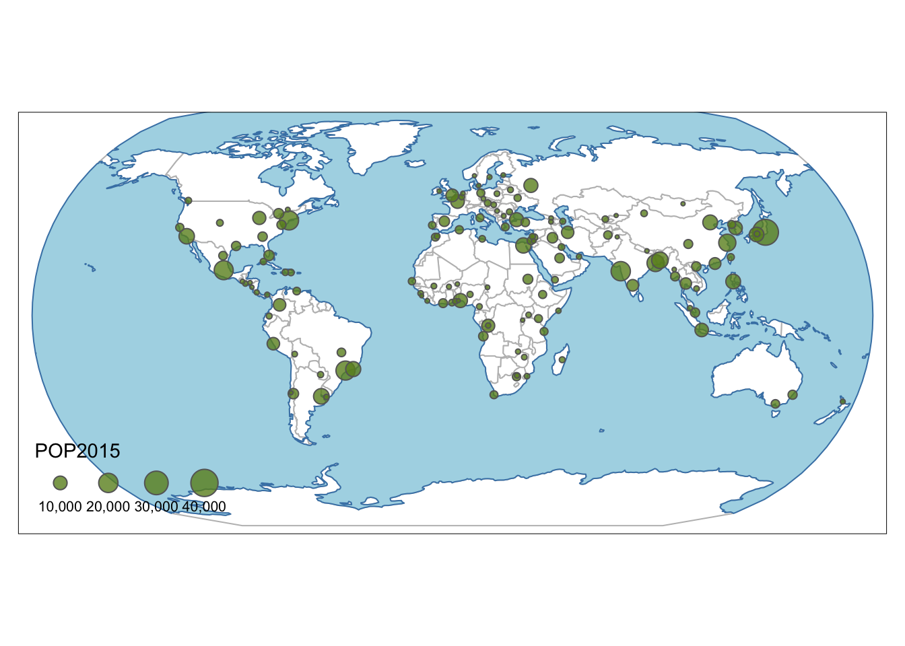
Надписи объектов на карте размещаются с помощью функции tm_text. Данная функция содержит весьма полезные параметры remove.overlap и auto.placement, которые позволяют убрать перекрывающиеся подписи и автоматически разместить из вокруг точек так, чтобы уменьшить перекрытия с самими знаками и другими подписями. Дополним предыдущую карту названиями городов:
tm_shape(lyrp$countries) +
tm_fill(col = 'white') +
tm_borders(col = 'grey') +
tm_shape(lyrp$ocean) +
tm_fill(col = 'lightblue') +
tm_borders(col = 'steelblue') +
tm_shape(lyrp$cities) +
tm_bubbles('POP2015', col = 'olivedrab', alpha = 0.8) +
tm_text('name_ru', size = 0.5, remove.overlap = TRUE, auto.placement = TRUE)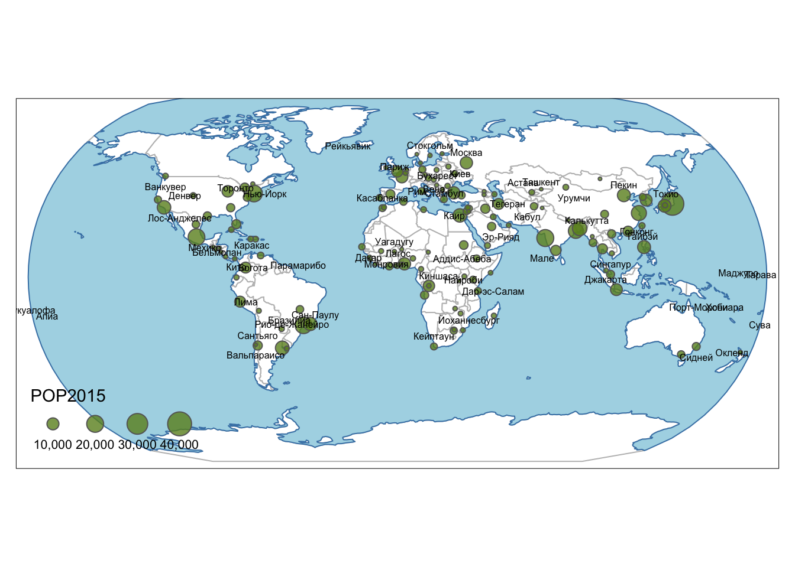
10.2.2 Растровые данные
При отображении растровых данных используется способ отображения tm_raster(). В случае отображения количественных растров Параметр breaks определяет границы интервалов, для которых будут использованы цвета, взятые из параметра palette:
tm_shape(precm) +
tm_raster('prec1',
breaks = c(10, 50, 100, 200, 500, 1000),
palette = ramp(5)) +
tm_shape(lyrm$ocean) +
tm_fill(col = 'lightblue') +
tm_borders(col = 'steelblue')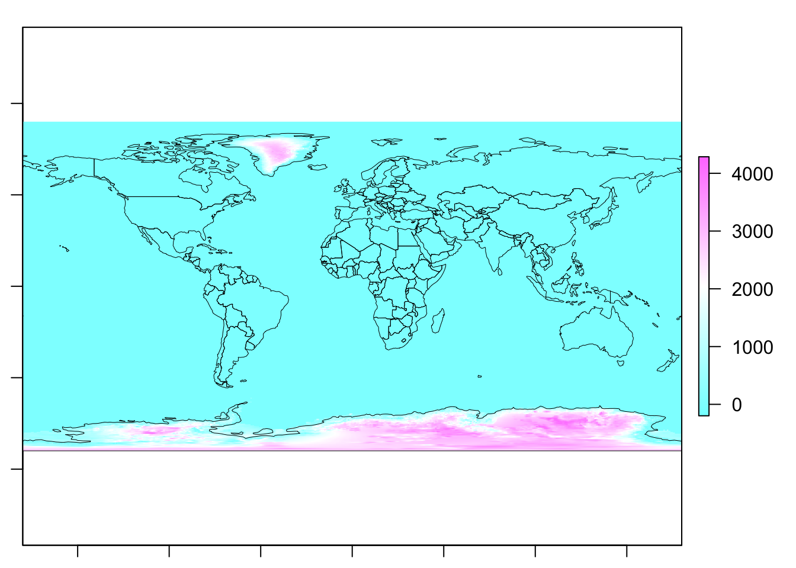
Растровые данные могут хранить и качественную информацию: например, тип почв или вид землепользования. В качестве примера визуализируем типы земельного покрова (land cover) из растрового стека land, который есть в пакете tmap. Цвета здесь выбираются автоматически, их настройка рассматривается в следующем параграфе:

10.3 Цветовые шкалы
Для изменения цветовой шкалы при определении способа изображения вы можете определить параметр palette. Пакет tmap позволяет работать с цветовыми палитрами Color Brewer или задавать цвета вручную. Очень удобным инструментом подбора шкалы является функция palette_explorer() из пакета tmaptools. При вызове функции открывается интерактивное приложение, позволяющее менять настройки цветовых палитр:

Приложение Palette Explorer из пакета tmaptools
Данных палитр хватит для решения большинства задач по картографической визуализации. Применим категориальную палитру Dark2:
tm_shape(lyrp$countries) +
tm_polygons('economy', palette = 'Dark2') + # качественная переменная
tm_shape(lyrp$ocean)+
tm_fill(col = 'azure') +
tm_borders(col = 'steelblue')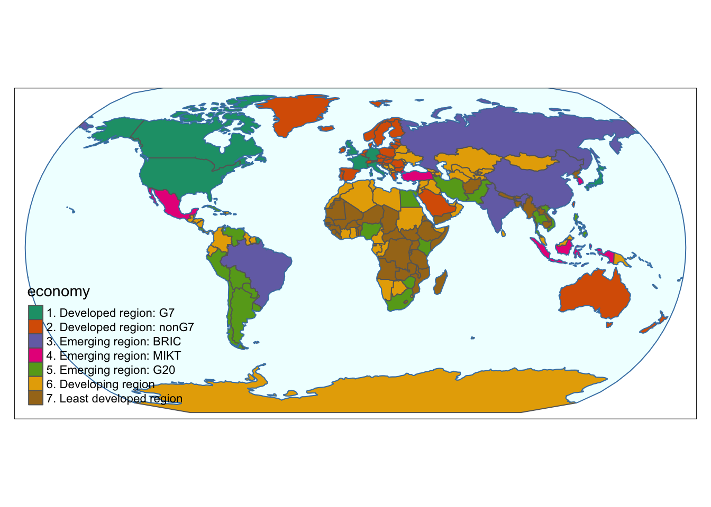
Для количественного показателя (количество осадков) применим палитру PuBuGn:
tm_shape(precm) +
tm_raster('prec1',
breaks = c(10, 50, 100, 200, 500, 1000),
palette = 'PuBuGn') +
tm_shape(lyrm$ocean) +
tm_fill(col = 'lightblue') +
tm_borders(col = 'steelblue')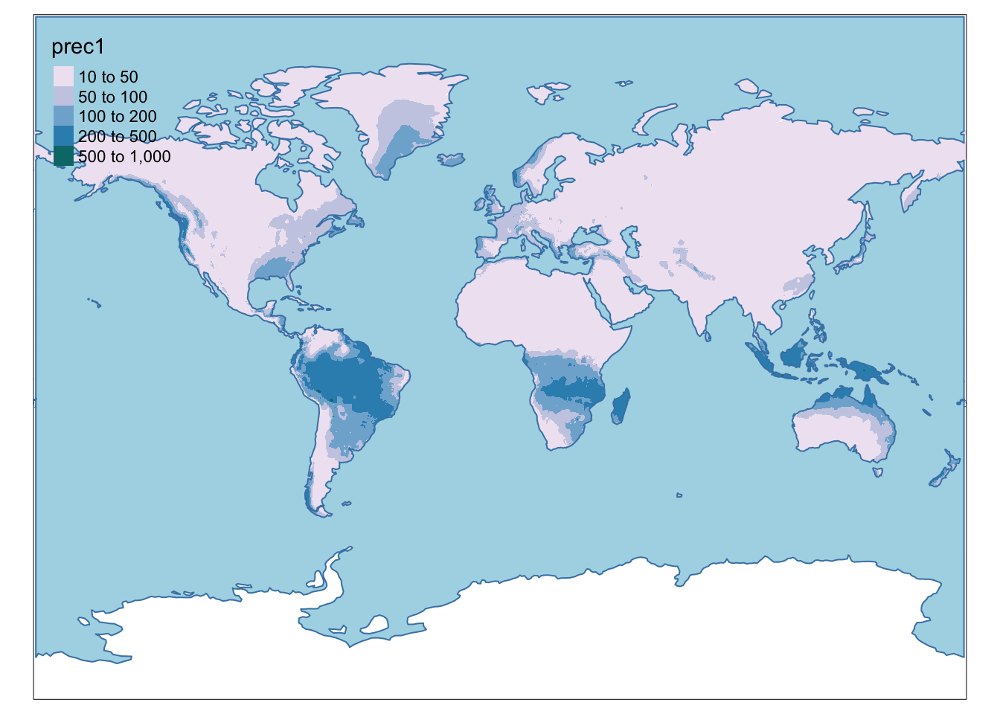
Вы всегда можете, конечно, определить цвета вручную. В этом случае их количество должно совпадать с количеством интервалов классификации:
tm_shape(precm) +
tm_raster('prec1',
breaks = c(10, 50, 100, 200, 500, 1000),
palette = c('white', 'gray80', 'gray60', 'gray40', 'gray20')) +
tm_shape(lyrm$ocean) +
tm_fill(col = 'lightblue') +
tm_borders(col = 'steelblue')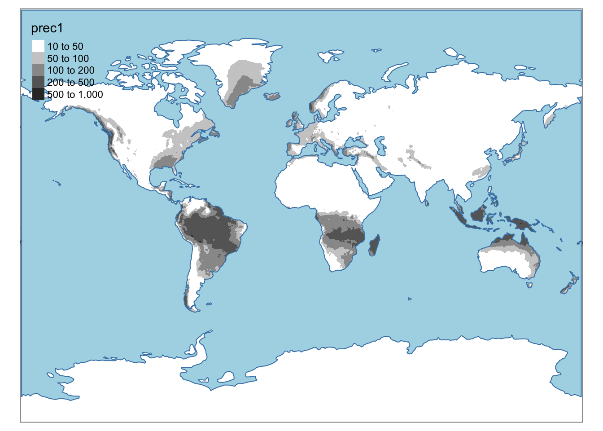
Для категориальных данных необходимо тщательно подбирать цвета, стандартные шкалы тут могут не подойти (более подробно о шкалах — далее). Для вышеприведенного примера с растром типов земельного покрова можно подобрать следующие цвета:
pal = c("#003200", "#3C9600", "#006E00", "#556E19", "#00C800", "#8CBE8C",
"#467864", "#B4E664", "#9BC832", "#EBFF64", "#F06432", "#9132E6",
"#E664E6", "#9B82E6", "#B4FEF0", "#646464", "#C8C8C8", "#FF0000",
"#FFFFFF", "#5ADCDC")
tm_shape(land) +
tm_raster('cover', palette = pal)
10.4 Классификация
10.4.1 Методы классификации
Классификация данных — важнейший этап картографирования, который во многом определяет, как данные будут представлены на карте и какие географические выводы читатель сделает на ее основе. Существует множество методов классификации числовых рядов. Классифицировать данные автоматически можно с помощью функции classIntervals() из пакета classInt. Наберите в консоли ?classInt чтобы прочитать справку о методах классификации.
Посмотрим несколько методов классификации. Первый параметр функции classInt — это числовой ряд. Число классов следует передать в параметр n =, метод классификации указывается в параметре style =.
Для начала попробуем метод равных интервалов, который просто делит размах вариации (диапазон от минимума до максимум) на \(n\) равных интервалов. Функция plot() применительно к созданной классификации рисует замечательный график, на котором показаны границы классов и эмпирическая функция распределения показателя. В параметр pal можно передать цветовую палитру:
# Запишем число классов в переменную
nclasses = 5
intervals = classIntervals(coun$lifexp, n = nclasses, style = "equal")
# извлечь полученные границы можно через $brks
intervals$brks
## [1] 48.860 55.748 62.636 69.524 76.412 83.300
plot(intervals, pal = ramp(nclasses), cex=0.5, main = "Равные интервалы MIN/MAX")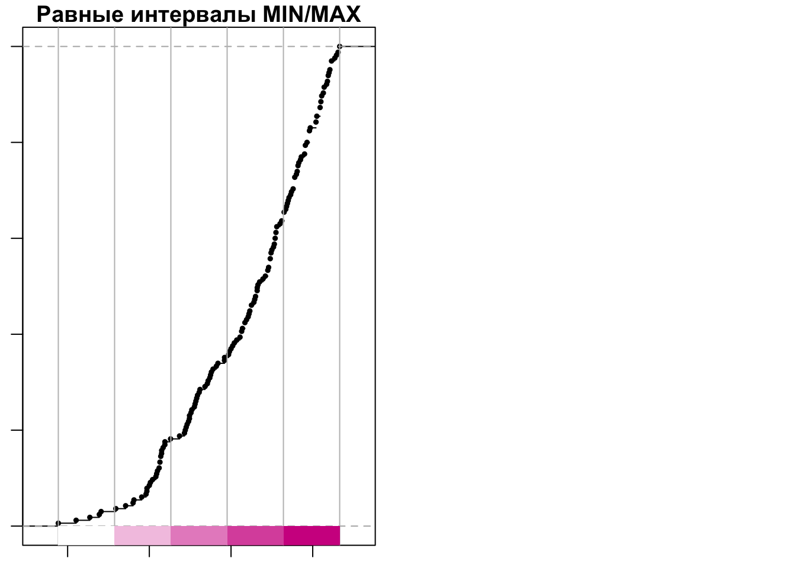
Созданные интервалы хоть и равны, но не аккуратны. Зато метод классификации "pretty" создает также равные интервалы, но может слегка расширить диапазон или добавить 1 класс, чтобы получить границы интервалов, округленные до целых чисел:
intervals = classIntervals(coun$lifexp, n = nclasses, style = "pretty")
intervals$brks
## [1] 45 50 55 60 65 70 75 80 85
plot(intervals, pal = ramp(nclasses), cex=0.5, main = "Округленные равные интервалы")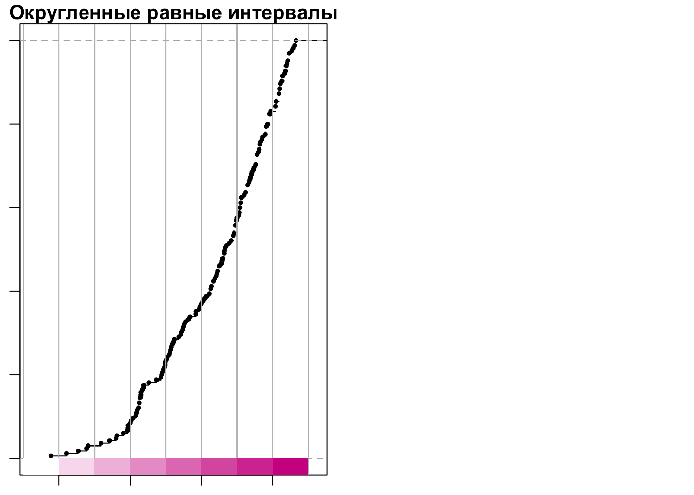
Квантили — равноколичественные интервалы. В каждом классе содержится одинаковое число объектов:
intervals = classIntervals(coun$lifexp, n = nclasses, style = "quantile")
intervals$brks
## [1] 48.860 64.488 71.300 75.440 79.360 83.300
plot(intervals, pal = ramp(nclasses), cex=0.5, main = "Квантили (равноколичественные)")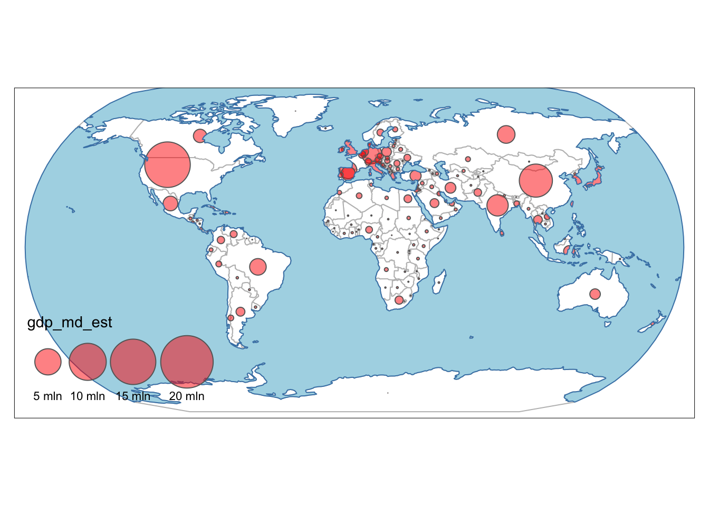
Метод “естественных интервалов”, или метод Фишера-Дженкса позволяет найти классы, максимально однородные внутри и при этом максимально отличающиеся друг от друга:
intervals = classIntervals(coun$lifexp, n = nclasses, style = "jenks")
intervals$brks
## [1] 48.86 55.90 63.70 70.40 77.10 83.30
plot(intervals, pal = ramp(nclasses), cex=0.5, main = "Естественные интервалы")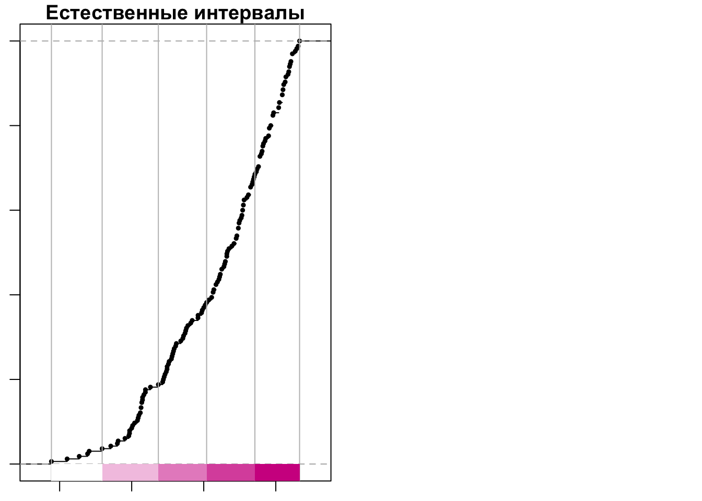
10.4.2 Применение на картах
Чтобы использовать заранее вычисленные интервалы классификации, их необходимо подать в параметр breaks при построении карты:
brks = classIntervals(coun$lifexp, n = 4, style = "pretty")$brks
tm_shape(coun) +
tm_polygons('lifexp',
border.col = 'gray20',
palette = 'YlGn',
breaks = brks) + # количественная переменная
tm_shape(lyrp$ocean) +
tm_fill(col = 'azure') +
tm_borders(col = 'steelblue4')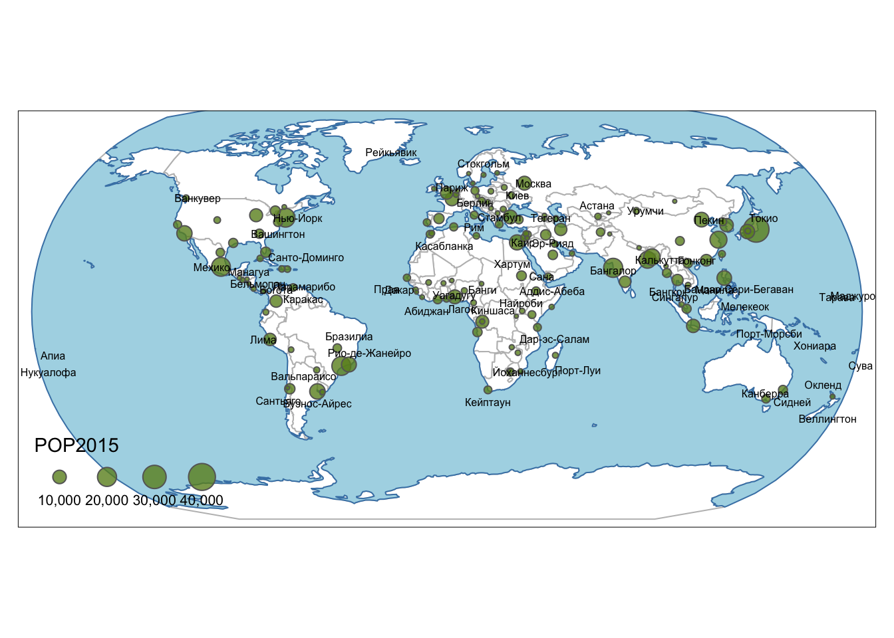
Аналогичным путем работают шкалы для растровых данных:
tm_shape(precm) +
tm_raster('prec1',
breaks = classIntervals(values(precm), n = 5, style = "quantile")$brks,
palette = 'PuBuGn') +
tm_shape(lyrm$ocean) +
tm_fill(col = 'lightblue') +
tm_borders(col = 'steelblue')Учтите, что метод естественных интервалов — ресурсоемкий в вычислительном плане. Поэтому если вы хотите с его помощью классифицировать растровые данные, целесообразно сделать выборку не более чем из нескольких тысяч пикселов. Иначе придется долго ждать.
Для классификации естественными интервалами сделаем выборку в 2 000 значений с растра c помощью функции sampleRandom() из пакета raster:
smpl = sampleRandom(precm$prec1, size = 2000)
tm_shape(precm) +
tm_raster('prec1',
breaks = classIntervals(smpl, n = 5, style = "jenks")$brks,
palette = 'PuBuGn') +
tm_shape(lyrm$ocean) +
tm_fill(col = 'lightblue') +
tm_borders(col = 'steelblue')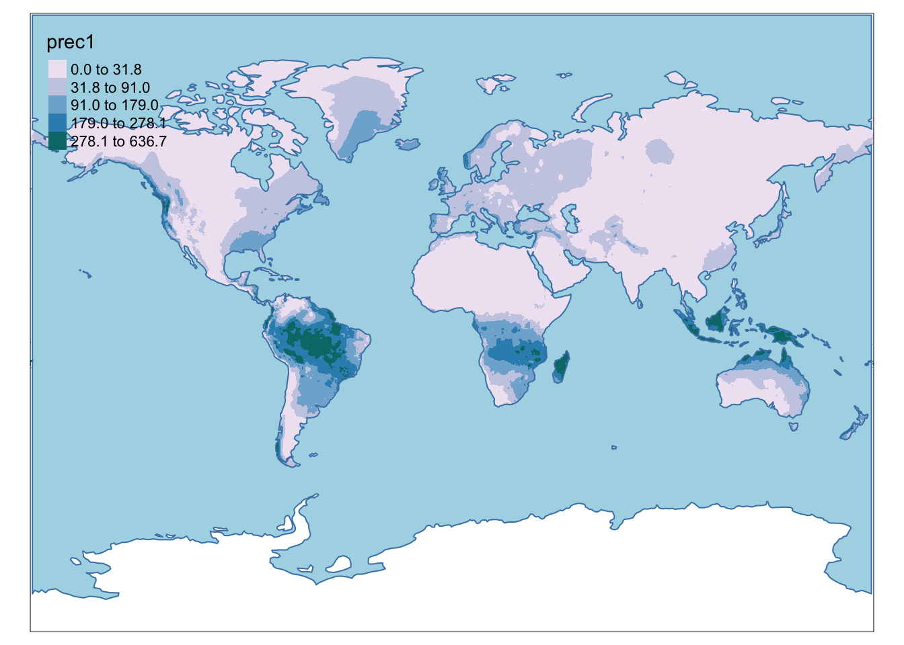
10.4.3 Классификация при отображении
Пакет tmap позволяет выполнять классификацию данных непосредственно при отображении. Это бывает удобно, когда одну и ту же классификацию не надо использовать несколько раз, и когда нет необходимости делать выборку значений (как в случае метода естественных интервалов). Для этого функции способов изображения предлагают несколько параметров:
n— количество классовstyle— метод классификации (так же как и вclassIntervals())breaks— значения границ интервалов (необходимы, еслиstyle == fixed)interval.closure— замыкание интервала (по умолчанию стоитleft, что означает, что в интервал включается нижняя граница, за исключением последнего интервала, включающего и нижнюю и верхнюю границу)midpoint— нейтральное значение, которое используется для сопоставления с центральным цветом в расходящихся цветовых палитрах
Построим карту продолжительности жизни, используя классификацию при отображении:
tm_shape(coun) +
tm_polygons('lifexp',
palette = 'YlGn',
n = 5,
style = 'fisher',
border.col = 'gray20') + # количественная переменная
tm_shape(lyrp$ocean) +
tm_fill(col = 'azure') +
tm_borders(col = 'steelblue4')Установка средней точки при классификации оказывается очень полезной в тех случаях, когда данные являются биполярными. Покажем это на примере данных WorldClim по температуре:
temp = raster::getData("worldclim", var = "tmean", res = 10) %>%
extend(extent(-180, 180, -90, 90)) %>%
projectRaster(crs = "+proj=mill") / 10
# не забываем поделить результат на 10,
# так как данные хранятся в виде целых чисел!Визуализируем данные по температуре, используя классическую красно-бело-синюю палитру RdBu и нейтральную точку 0 градусов по Цельсию. По умолчанию в данной палитре красный цвет соответствует малым значениям. пакет tmap позволяет инвертировать цвета палитры, добавив знак минус перед ее названием. Помимо этого, для размещения положительных значений наверху выполним обратную сортировку элементов легенды, используя параметр legend.reverse = TRUE:
tm_shape(temp) +
tm_raster('tmean1',
n = 11,
midpoint = 0,
style = 'pretty',
legend.reverse = TRUE,
palette = '-RdBu') +
tm_shape(lyrm$ocean) +
tm_fill(col = 'azure') +
tm_borders(col = 'steelblue')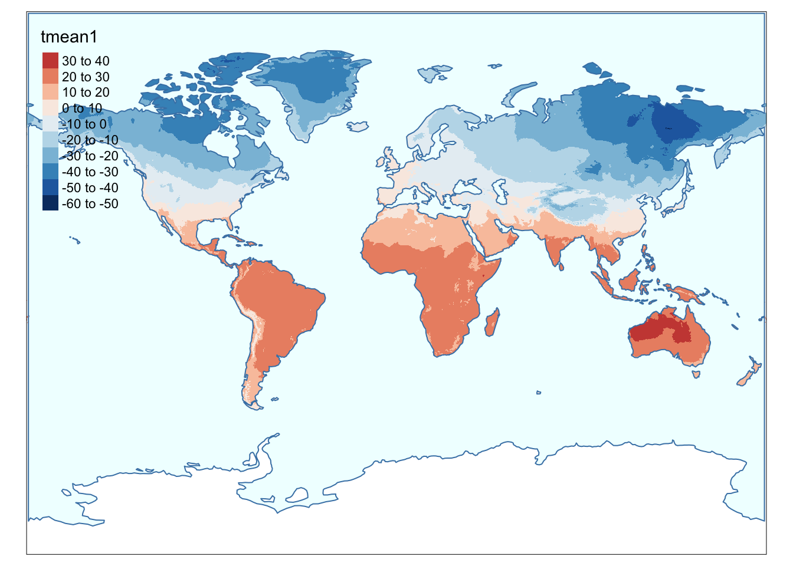
10.4.4 Пропущенные данные
Весьма важно отметить на карте области, для которых данные отсутствуют. Вы могли обратить внимание, что для способов изображения, применимых к векторным данным, tmap автоматически добавляет класс легенды, который отвечает за пропуски. Для растров, однако, он это не делает. Чтобы принудительно вывести в легенду и на карту символ, отвечающий за пропущенные значения, необходимо определить параметр colorNA. Обычно, в зависимости от цветовой палитры легенды, для этого используют серый или белый цвет:
tm_shape(temp) +
tm_raster('tmean1',
colorNA = 'grey', # определяем цвет для пропущенных значений
n = 11,
midpoint = 0,
style = 'pretty',
legend.reverse = TRUE,
palette = '-RdBu') +
tm_shape(lyrm$ocean) +
tm_fill(col = 'azure') +
tm_borders(col = 'steelblue')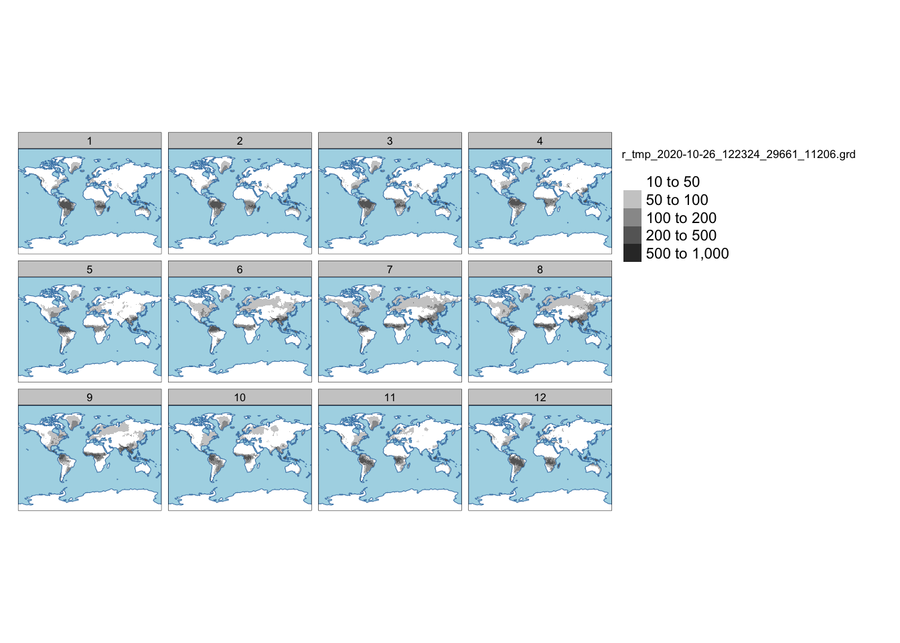
10.5 Компоновка
Пакет tmap предоставляет широкий набор настроек компоновки картографического изображения, который включает настройку легенды, заголовка карты и ряда других важных параметров. Большинство настроек компоновки осуществляется через функцию tm_layout(), однако часть из них, специфичная для конкретного слоя, определяется непосредственно при настройке способа изображения.
В примере ниже показано, как:
- добавить заголовок карты (
main.title), - разместить легенду в нижнем левом углу (
legend.position = c('left', 'bottom')) - поместить ее легенду в полупрозрачный прямоугольник (параметры
legend<...>), - убрать заголовок легенды (
title), - заменить стандартный шрифт на Open Sans (
fontfamily):
tm_shape(lyrp$countries) +
tm_polygons('economy', title = '') + # убираем заголовок легенды
tm_shape(lyrp$ocean)+
tm_fill(col = 'azure') +
tm_borders(col = 'steelblue') +
tm_layout(legend.position = c('left', 'bottom'),
fontfamily = 'Open Sans', # шрифт
main.title.size = 1.2, # масштаб шрифта в заголовке
main.title = 'Тип экономики', # заголовок
legend.frame = TRUE, # рамка вокруг легенды
legend.frame.lwd = 0.2, # толщина рамки вокруг легенды
legend.bg.alpha = 0.8, # прозрачность фона в легенде
legend.bg.color = 'white') # цвет фона легенды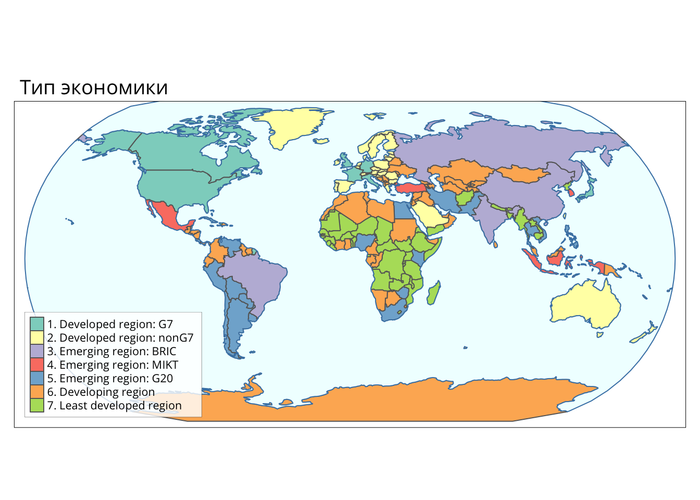
Для того чтобы определить заголовок легенды размера значка или диаграммы, необходимо задать параметр title.size. Помимо этого, легенду можно пристыковать непосредственно к рамке карты, если задать значения параметра legend.position в верхнем регистре:
tm_shape(coun) +
tm_fill(col = 'white') +
tm_borders(col = 'grey') +
tm_bubbles('gdp_md_est',
scale = 2.5,
col = 'red',
alpha = 0.5,
title.size = '$ млн') + # количественная переменная
tm_shape(lyrp$ocean) +
tm_fill(col = 'lightblue') +
tm_borders(col = 'steelblue') +
tm_layout(legend.position = c('LEFT', 'BOTTOM'), # верхний регистр — легенда встык
fontfamily = 'Open Sans', # шрифт
main.title.size = 1.2, # масштаб шрифта в заголовке
main.title = 'Валовый внутренний продукт стран мира', # заголовок
frame.lwd = 2,
legend.frame = TRUE, # рамка вокруг легенды
legend.frame.lwd = 0.5, # толщина рамки вокруг легенды
legend.bg.color = 'white') # цвет фона легенды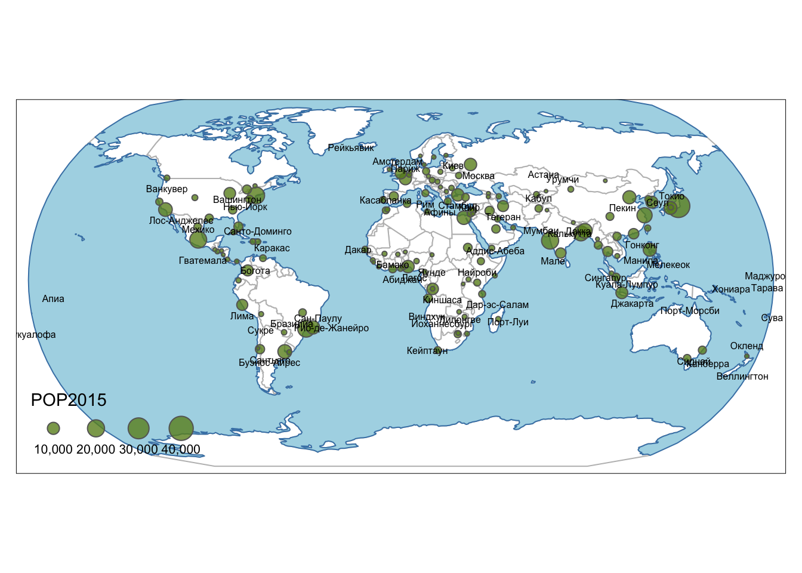
По умолчанию tmap размещает легенду внутри фрейма картографического изображения. Однако ее можно вынести и наружу, используя параметр legend.outside функции tm_layout(). В примере ниже показано также, как можно
- задать текст легенды для отсутствующих данных (
textNA), - отформатировать разделитель в легенде с интервалами значений (
legend.format), - убрать рамку карты (
frame), - сдвинуть заголовок вдоль строки, выровняв его с центром карты (
main.title.position):
tm_shape(coun) +
tm_polygons('lifexp',
border.col = 'gray20',
palette = 'YlGn',
n = 4,
style = 'jenks',
title = 'Лет',
colorNA = 'lightgray',
textNA = 'Нет данных',
legend.format = list(text.separator = '—')) + # количественная переменная
tm_shape(lyrp$ocean) +
tm_fill(col = 'azure') +
tm_borders(col = 'steelblue4') +
tm_layout(frame = FALSE,
main.title.position = 0.15,
legend.outside = TRUE,
legend.outside.position = 'right',
fontfamily = 'Open Sans',
main.title.size = 1.2,
main.title = 'Продолжительность жизни',
legend.bg.color = 'white')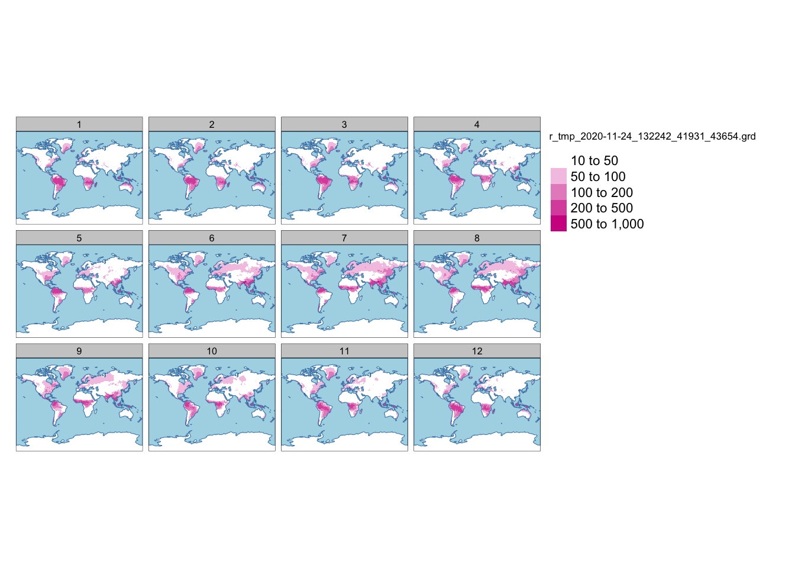
Для отображения координатной сетки вы можете использовать функцию tm_grid(). По умолчанию она строит координатную сетку в единицах измерения проекции. Однако если требуется градусная сетка, то ее можно определить, используя параметр projection = "longlat":
tm_shape(temp) +
tm_raster('tmean1',
title = '°C',
colorNA = 'grey', # определяем цвет для пропущенных значений
textNA = 'Нет данных',
legend.format = list(text.separator = '—'),
n = 11,
midpoint = 0,
style = 'pretty',
legend.reverse = TRUE,
palette = '-RdBu') +
tm_shape(lyrm$ocean) +
tm_fill(col = 'azure') +
tm_borders(col = 'steelblue') +
tm_layout(legend.position = c('left', 'bottom'),
fontfamily = 'Open Sans',
main.title.size = 1.2,
main.title = 'Средняя температура января',
legend.frame = TRUE,
legend.frame.lwd = 0.2,
legend.bg.alpha = 0.5,
legend.bg.color = 'white') +
tm_grid(x = seq(-180, 180, by = 30),
y = seq(-90, 90, by = 30),
lwd = 0.2,
col = "black",
projection = "longlat",
labels.inside.frame = FALSE)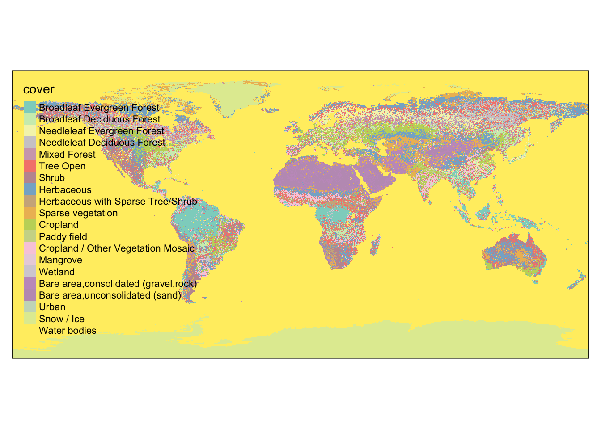
Если вам необходимо обеспечить значки градуса, вы можете сделать это, используя параметр labels.format, определив в нем анонимную функцию, добавляющую значок градуса в переданный ей вектор подписей.
Помимо этого, вам может понадобиться увеличить поля вокруг карты, чтобы освободить пространство для размещения меток (на предыдущей карте они не влезли). Это делается через параметр outer.margins, который ожидает получить вектор из четырех значений (по умолчанию все они равны 0.02, т.е. 2% от размера окна).
tm_shape(temp) +
tm_raster('tmean1',
title = '°C',
colorNA = 'grey', # определяем цвет для пропущенных значений
textNA = 'Нет данных',
legend.format = list(text.separator = '—'),
n = 11,
midpoint = 0,
style = 'pretty',
legend.reverse = TRUE,
palette = '-RdBu') +
tm_shape(lyrm$ocean) +
tm_fill(col = 'azure') +
tm_borders(col = 'steelblue') +
tm_layout(legend.position = c('LEFT', 'BOTTOM'),
fontfamily = 'Open Sans',
main.title.size = 1.2,
main.title = 'Средняя температура января',
legend.frame = TRUE,
legend.frame.lwd = 0.2,
legend.bg.alpha = 0.8,
legend.bg.color = 'white',
outer.margins = c(0.05, 0.02, 0.02, 0.02),
inner.margins = c(0, 0, 0, 0)) +
tm_grid(x = seq(-180, 180, by = 30),
y = seq(-90, 90, by = 30),
lwd = 0.2,
col = "black",
projection = "longlat",
labels.inside.frame = FALSE,
labels.format = list(fun = function(X) paste0(X, '°')))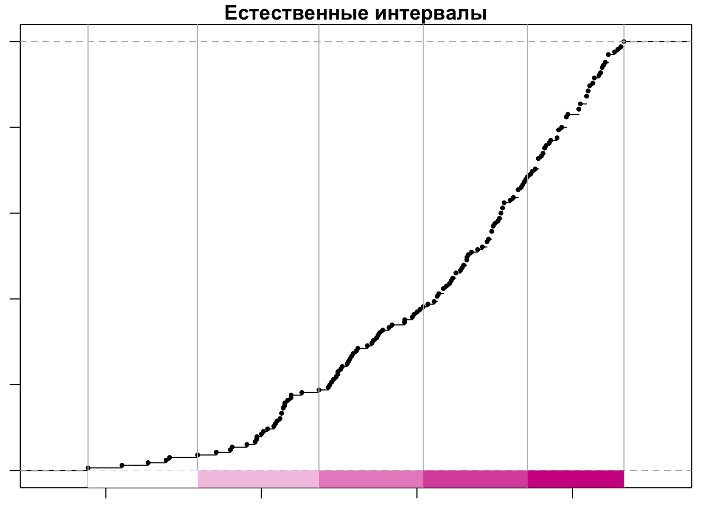
Подписи сетки координат можно добавить и для более сложных проекций, однако располагаться они будут по-прежнему вдоль осей X и Y. В примере ниже также показано как можно увеличить расстояние между заголовком и картой, определив более крупный отступ от верхней стороны в параметре inner.margins:
tm_shape(coun) +
tm_polygons('lifexp',
palette = 'YlGn',
n = 4,
style = 'jenks',
border.col = 'gray20',
title = 'Лет',
colorNA = 'lightgray',
textNA = 'Нет данных',
legend.reverse = TRUE,
legend.format = list(text.separator = '—')) + # количественная переменная
tm_shape(lyrp$ocean) +
tm_fill(col = 'azure') +
tm_borders(col = 'steelblue4') +
tm_layout(frame = FALSE,
main.title.position = 0.22,
legend.outside = TRUE,
legend.outside.position = 'right',
fontfamily = 'Open Sans',
main.title.size = 1.2,
main.title = 'Продолжительность жизни',
legend.bg.color = 'white',
outer.margins = c(0.02, 0.05, 0.02, 0.02),
inner.margins = c(0.02, 0.02, 0.07, 0.02)) +
tm_grid(x = seq(-180, 180, by = 60),
y = seq(-90, 90, by = 30),
lwd = 0.2,
col = "black",
projection = "longlat",
labels.inside.frame = FALSE,
labels.format = list(fun = function(X) paste0(X, '°')))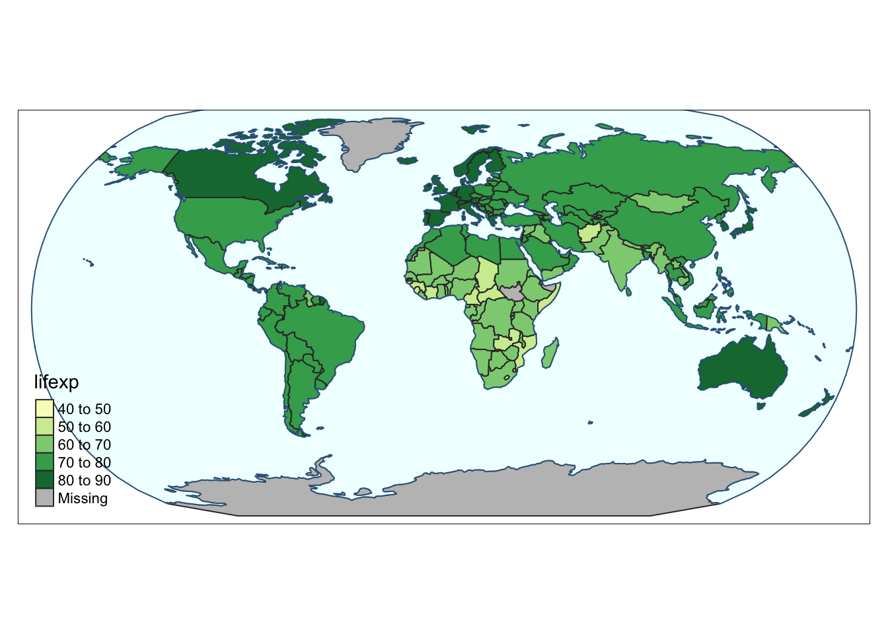
10.6 Фасеты и серии карт
Фасетная компоновка предполагает, упорядочение элементов в матричной форме на одной странице. Как правило, картографические фасеты идентичны по содержанию, но показывают одно и то же явление при различных заданных условиях: за разные года, по разным странам и т.д. Создание фасет с помощью tmap осуществляется с помощью специальной функции tm_facets(), которой необходимо передать название переменной, отвечающей за разделение. В свою очередь, это означает, что данные должны быть приведены к «длинной» форме (если информация за разные года содержится в разных столбцах, то нужно год записать в отдельную переменную). Здесь вам пригодится знание пакета tidyr.
Рассмотрим создание фасет на примере данных Gapminder по средней продолжительности жизни c 1960 по 2010 г:
('1H3nzTwbn8z4lJ5gJ_WfDgCeGEXK3PVGcNjQ_U5og8eo' %>% # продолжительность жизни
gs_key(lookup = FALSE) %>% # не используем авторизацию
gs_read(ws = 1) %>%
rename(name = 1) %>%
gather(year, lifexp, -name) %>%
filter(year %in% c(1960, 1970, 1980, 1990, 2000, 2010)) %>%
left_join(read_excel('data/gapminder.xlsx', 2)) %>%
mutate(geo = stringr::str_to_upper(geo)) -> lifedf2) # выгружаем данные по ВВП на душу населения и сохраняем в переменную lifedf
## # A tibble: 1,560 x 13
## name year lifexp geo four_regions eight_regions six_regions
## <chr> <chr> <dbl> <chr> <chr> <chr> <chr>
## 1 Abkh… 1960 NA <NA> <NA> <NA> <NA>
## 2 Afgh… 1960 31.9 AFG asia asia_west south_asia
## 3 Akro… 1960 NA <NA> <NA> <NA> <NA>
## 4 Alba… 1960 62.9 ALB europe europe_east europe_cen…
## 5 Alge… 1960 47.5 DZA africa africa_north middle_eas…
## 6 Amer… 1960 NA <NA> <NA> <NA> <NA>
## 7 Ando… 1960 NA AND europe europe_west europe_cen…
## 8 Ango… 1960 36.0 AGO africa africa_sub_s… sub_sahara…
## 9 Angu… 1960 NA <NA> <NA> <NA> <NA>
## 10 Anti… 1960 63.0 ATG americas america_north america
## # … with 1,550 more rows, and 6 more variables: members_oecd_g77 <chr>,
## # Latitude <dbl>, Longitude <dbl>, `UN member since` <dttm>, `World bank
## # region` <chr>, `World bank income group 2017` <chr>
coun2 = lyrp$countries %>% left_join(lifedf2, by = c('adm0_a3' = 'geo'))Создадим серию карт за разные года:
tm_shape(coun2) +
tm_polygons('lifexp',
palette = 'YlGnBu',
n = 3,
style = 'pretty',
border.col = 'gray20',
title = 'Лет',
colorNA = 'lightgray',
textNA = 'Нет данных',
legend.reverse = TRUE,
legend.format = list(text.separator = '—')) + # количественная переменная
tm_facets(by = 'year',
free.coords = FALSE,
drop.units = TRUE,
drop.NA.facets = TRUE,
ncol = 2) +
tm_shape(lyrp$ocean) +
tm_fill(col = 'azure') +
tm_borders(col = 'steelblue4') +
tm_layout(frame = FALSE,
legend.outside = TRUE,
legend.outside.position = 'bottom',
fontfamily = 'Open Sans',
main.title.size = 1.2,
main.title = 'Средняя продолжительность жизни',
legend.bg.color = 'white',
outer.margins = c(0.02, 0.1, 0.02, 0.02),
inner.margins = c(0.02, 0.02, 0.07, 0.02))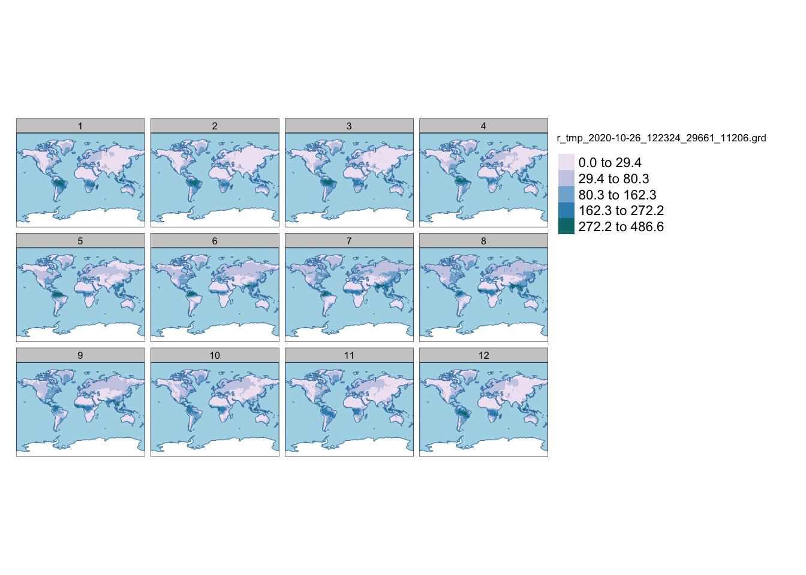
Фасетные карты по растровым данным в настоящий момент не поддерживаются в пакете tmap, но вы можете создать их, используя функцию tmap_arrange(), которая принимает на вход список из карт tmap и упорядочивает их в фасетной компоновке.
В примере ниже показано, как:
- вычислить равноступенную шкалу, единую для всех карт — используя максимум и минимум по всем растрам из стека, а также функцию
fullseq()из пакета scales, заведомо накрывающую указанный диапазон значений интервалами заданного размера. - применить функционал
map2()из пакета purrr (входит в tidyverse) для одновременной итерации по двум спискам: названий растров в стеке (X) и названий месяцев (Y), которые нужны для формирования заголовков - упорядочить карты по регулярной сетке с двумя столбцами и полями отступа каждой фасеты (параметр
outer.margins), используяtmap_arrange()
minval = min(cellStats(temp, 'min'))
maxval = max(cellStats(temp, 'max'))
brks = scales::fullseq(c(minval, maxval), 10)
months = c('Январь', 'Февраль', 'Март', 'Апрель',
'Март', 'Июнь', 'Июль', 'Август',
'Сентябрь', 'Октябрь', 'Ноябрь', 'Декабрь')
maps = purrr::map2(names(temp), months, function(X, Y) {
tm_shape(temp) +
tm_raster(X,
title = '°C',
colorNA = 'grey', # определяем цвет для пропущенных значений
textNA = 'Нет данных',
legend.format = list(text.separator = '—'),
breaks = brks,
midpoint = 0,
style = 'fixed',
legend.reverse = TRUE,
palette = '-RdBu') +
tm_shape(lyrm$ocean) +
tm_fill(col = 'azure') +
tm_borders(col = 'steelblue') +
tm_layout(legend.position = c('LEFT', 'BOTTOM'),
fontfamily = 'Open Sans',
main.title.size = 1.2,
main.title = Y,
legend.frame = TRUE,
legend.frame.lwd = 0.2,
legend.bg.alpha = 0.8,
legend.bg.color = 'white',
inner.margins = c(0, 0, 0, 0)) +
tm_grid(x = seq(-180, 180, by = 30),
y = seq(-90, 90, by = 30),
lwd = 0.2,
col = "black",
projection = "longlat",
labels.inside.frame = FALSE,
labels.format = list(fun = function(Z) paste0(Z, '°')))
})
tmap_arrange(maps, asp = NA, ncol = 2,
outer.margins = 0.05)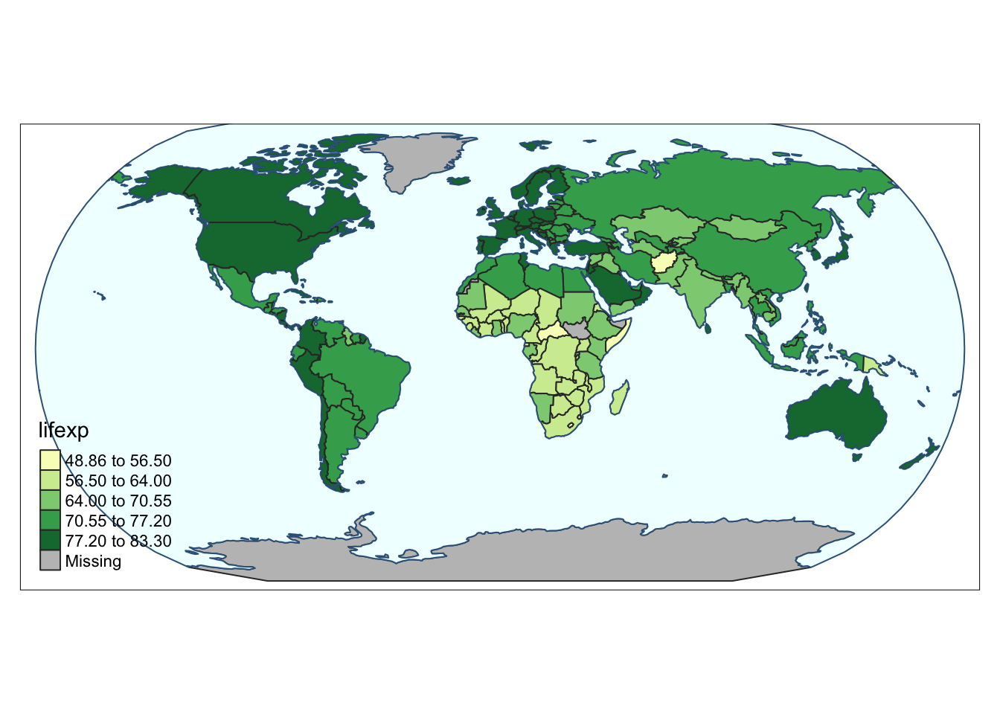
10.7 Картографические анимации
Картографические анимации вы пакете tmap создаются путем следующей последовательности действий:
- Добавить в построение карты функцию
tm_facets(along = "name"), гдеname— название атрибута, значения которого отвечают за каждый кадр анимации. - Записать созданную карту в переменную (условно назовем ее
map). - Вызвать для созданной переменной функцию
tmap_animation(map, filename = "filename.gif", delay = 25), определив имя файла и задержку в миллисекундах между кадрами.
Внимание: для того чтобы работало построение анимаций средствами tmap, на вашем компьютере должна быть установлена библиотека ImageMagick.
Для примера построим анимацию по данным изменения средней продолжительности жизни:
map = tm_shape(coun2) +
tm_polygons('lifexp',
palette = 'YlGnBu',
n = 3,
style = 'pretty',
border.col = 'gray20',
title = 'Лет',
colorNA = 'lightgray',
textNA = 'Нет данных',
legend.reverse = TRUE,
legend.format = list(text.separator = '—')) + # количественная переменная
tm_facets(along = 'year',
free.coords = FALSE,
drop.units = TRUE) +
tm_shape(lyrp$ocean) +
tm_fill(col = 'azure') +
tm_borders(col = 'steelblue4')
tmap_animation(map, 'images/lifexp.gif', delay = 100)
10.8 Интерактивные карты
Любую карту tmap можно перевести в интерактивный режим с помощью функции tmap_mode() с параметром 'view'. Управлять дополнительными параметрами, специфичными для интерактивного режима, можно используя функцию tm_view(). В частности, можно установить координаты центра карты и масштабный уровень в параметре set.view и ограничить диапазон масштабных уровней в параметре set.zoom.limits. Состав полей, значения которых отображаются во всплывающем окне при щелчке на символе, определяются параметром popup.vars:
tmap_mode('view')
tm_shape(coun) +
tm_polygons('lifexp',
border.col = 'gray20',
palette = 'YlGn',
n = 4,
style = 'jenks',
title = 'Лет',
colorNA = 'lightgray',
textNA = 'Нет данных',
legend.format = list(text.separator = '—'),
popup.vars = c('sovereignt', 'lifexp')) + # поля для всплывающего окна
tm_view(set.view = c(20, 45, 2), # центр карты и масштабный уровень
set.zoom.limits = c(1, 4))Чтобы добавить карту-подложку, необходимо предварительно вызвать функцию tm_basemap(), передав ей название картографического сервиса. В примере ниже также показано, как можно сделать размер кружка постоянным во всех масштабах (параметр symbol.size.fixed):
tmap_mode('view')
coun = coun %>% mutate(gdp_scaled = round(0.001 * gdp_md_est))
tm_basemap("OpenStreetMap") +
tm_shape(coun) +
tm_borders(col = 'black', alpha = 0.5, lwd = 0.3) +
tm_shape(st_point_on_surface(coun)) + # делаем точки, чтобы диаграммы были точно внутри
tm_bubbles('gdp_scaled',
scale = 3,
col = 'violetred',
alpha = 0.5,
popup.vars = c('sovereignt', 'gdp_scaled')) +
tm_text('gdp_scaled', size = 'gdp_scaled',
remove.overlap = TRUE,
size.lowerbound = 0.2,
scale = 2) +
tm_view(set.view = c(20, 45, 3),
set.zoom.limits = c(2, 4),
symbol.size.fixed = TRUE,
text.size.variable = TRUE)10.9 Контрольные вопросы и упражнения
10.9.1 Вопросы
- Опишите шаблон построения тематической карты средствами tmap. Что из себя представляют его три основные компоненты?
- Могут ли на одной тематической карте комбинироваться пространственные данные в разных проекциях?
- Перечислите названия функций, отвечающих за отображение полигонов, линий и окружностей средствами tmap.
- Чему должно быть равно значение параметра
colпри отображении одноканального растра в случае если классификация и цвета определяются посредством параметровbreaksиpalette? - Опишите порядок использования функции
classIntervals()и ее основные параметры. - Перечислите методы классификации, доступные в
classIntervals(), а также принципы и работы. Какой из методов наиболее трудоемок в вычислительном плане? - В каком соотношении должно быть количество граничных классов и количество цветов при классификации?
- График какой функции отображается при вызове функции
plot()применительно к результату выполненияclassIntervals()? - Какие возможности существуют для применения классификации при построении карт средствами tmap? Обязательно ли заранее определять количество классов? В каком случае это может быть полезно.
- Как можно изменить порядок размещения элементов легенды в tmap?
- Опишите возможности управления расположением и внутренним форматированием легенды средствами tmap.
- С помощью какой функции можно построить координатную сетку на карте tmap?
- Как добавить значки градусов в подписи выходов сетки координат на карте tmap?
- Какие параметры позволяют управлять внешними и внутренними полями карты tmap?
- Опишите последовательность действий, которую необходимо реализовать для построения фасетной карты средствами tmap. Как можно реализовать построение таких карт на основе растровых данных?
- Опишите последовательность действий, которую необходимо реализовать для построения картографических анимаций средствами tmap. Какая библиотека должна быть установлена для этого на компьютере пользователя?
- Каким образом можно перевести отображение карт tmap в интерактивный режим? А обратно в статичный?
- Расскажите, что вы знаете о данных Natural Earth. На каком сайте они размещены? Сколько существует масштабных уровней? В каких форматах доступны данные? Как получить доступ к ним программным путем непосредственно из среды R?
10.9.2 Упражнения
Используя возможности пакетов rnaturalearth и tmap, создайте карту мира, в которой страны раскрашены в соответствии с континентом (переменная continent). Визуализируйте ее в статичном и интерактивном режиме.
Выполните выборку стран на Европейский континент. Трансформируйте данные о странах в коническую равнопромежуточную проекцию. Визуализируйте численность населения по странам (переменная pop_est) способом картодиаграмм. Добавьте на карту реки, озера и города, используя возможности
ne_download().
Самсонов Т.Е. Визуализация и анализ географических данных на языке R. М.: Географический факультет МГУ, lubridate::year(Sys.Date()). DOI: 10.5281/zenodo.901911 |